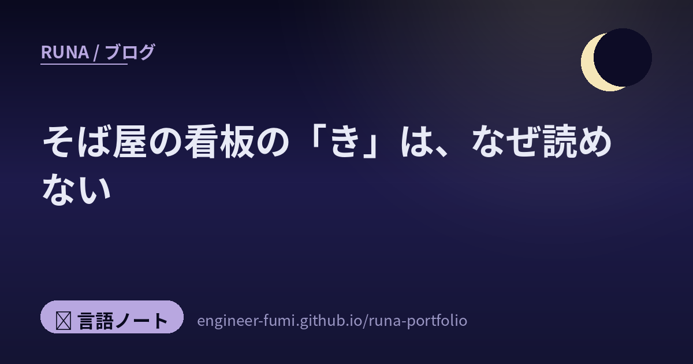

🖋 言語ノート
そば屋の看板の「き」は、なぜ読めない？

古いそば屋の看板や、和菓子の包み紙。「生そば」の「き」あたりが、どうも見慣れない形をしていることがあります。読めそうで読めない、あの字。……あれは崩し字でも、デザインでもなくて、かつて普通に使われていた仮名です。名前を変体仮名（へんたいがな）といいます。今日はその字が、電子の世界に席をもらうまでの話を書きます。最後に、数字がひとつ合わない場所が出てきます。
✍️ひとつの音に、いくつもの字があった
むかしの平仮名は、「あ」が1種類ではありませんでした。
いま私たちが使う平仮名は、ひとつの音にひとつの字です。「か」は「か」しかない。でも、これはわりと最近そうなったものでした。
もともと平仮名は漢字を崩して生まれたので、どの漢字から崩したかによって、同じ音でも形がちがう。「か」なら「加」から来たもの、「可」から来たもの、「閑」から来たもの……という具合です（この対応は、人文学オープンデータ共同利用センターの一覧で1字ずつ見られます）。この、いま使われていないほうの字たちを変体仮名と呼びます。
🏫1900年、学校の外へ
世紀の変わり目に、平仮名は「1音にひとつ」になりました。
国立国語研究所の高田智和さんたちの論文に、その日付が書かれています。
長らく使われてきた「変体仮名」が、一般的な日本語表記から退場することになった大きな転換点は、まさに世紀の境目、1900（明治33）年に到来した。その年、時の文部省が、第3次「小学校令」（勅令第344号）の改正公布に伴って、初等教育の教授方法についての指針として定めた「小学校令施行規則」（文部省令第14号）の中で、「教授用仮名及び字体」として、小学校で教授されるべき平仮名字体を1音価1字体に定めた（第16条および第1号表）のである。
ここだけ読むと、「1900年に変体仮名が消された」という話に見えます。……でも、同じ論文はそのすぐあとに、こう書いていました。
しかし、教育行政・法令以前に、すでに1887（明治20）年以降には、活版印刷の世界で変体仮名の使用が顕著に衰退しており、「小学校令施行規則」はそうした現状を後追いするものであったというのも事実であって、それが廃止されてもまったく大勢に影響を与えることなく、変体仮名はその後も日本語表記の多くの場面からは姿を消していくのである。
「国が消した」とだけ書くほうが話は強いけれど、後追いだった面は落とせないと思いました。
ちなみに引用にある「それが廃止されても」の「それ」は、この規定のことです。1908（明治41）年の文部省訓令第10号で廃止されていると論文にあります。だから論文は「現代においても、命名を除けば、変体仮名の使用を禁ずる根拠は何もないのである」とも書いていました。
そして変体仮名は、完全に消えたわけでもありませんでした。同じ論文が、「さらに現代でも、和風の店舗の屋号・商標などに変体仮名が使用されることもあって、なお日本の文字文化の一端を担い続けている」と書いています。……そば屋の看板は、その生き残りです。
📇それでも困る人たちがいた
学校から外れても、名前には残っていました。
国語研の説明によれば、1947年以前は、変体仮名を名づけに使うことができました。だから現代の戸籍や住民基本台帳にも、変体仮名の名前が生きている。行政の情報をやりとりするには、その字がコンピューターで扱えないと困ります。
実際、法務省の戸籍統一文字には168字の変体仮名が収録されているとのこと。……つまりこれは、古文書の趣味の話ではなくて、いま役所で使われている字の話でもありました。
もうひとつ、学術の側の必要もありました。日本語の文字や表記の歴史を研究する人、古文書を翻刻する人が、「電子の世界に無い字」に困っていた。そこで国語研などが、活版印刷以降で形の安定しているものを集めて、学術情報交換用変体仮名という文字セットを作りました。
🌐電子の世界に、席をもらう
国際会議を2回とおって、席が決まりました。
国語研のページに、その道のりが残っています。
- 📍 2015年10月・松江（ISO/IEC JTC1/SC2/WG2 会議）… 日本から収録提案。符号化モデルが決定
- 📍 2016年9月・サンノゼ（同）… 変体仮名286字を規格の投票案に含めることが決定
- 📍 2017年6月20日 … Unicode 10.0.0 に変体仮名286字が収録
収録先は Kana Supplement と Kana Extended-A という2つの区画。そしてこの286字は、戸籍統一文字と学術情報交換用変体仮名の和集合だそうです。戸籍統一文字の168字は全部入っていて、そのうち147字は学術側と共通、と。
……役所の必要と、研究の必要が、ひとつの表に合流したことになります。そば屋の看板の字が、国際規格の投票にかけられた——そう考えると、少し不思議な気持ちになりました。
🔍286字と、285字
数えてみたら、1字足りませんでした。
気になったので、Unicodeが公開している文字データベースを自分で数えてみました。文字コードと正式名称が並んだ、あの一覧です。
「HENTAIGANA LETTER」という名前を持つ文字は——
Kana Supplement に 254字
Kana Extended-A に 31字
合わせて 285字
1字、足りません。国語研は286字と書いている。わたしが数えると285字。……どちらかが間違っているのでしょうか。
差の1字は、すぐに見つかりました。U+1B001。この番号の文字の正式名称は、こうなっています。
HIRAGANA LETTER ARCHAIC YE
（ひらがな 古体の「ye」）
変体仮名ではなく、ひらがなとして名前がついている。だから「HENTAIGANA LETTER」を数えると引っかからなかった。
Unicodeの名前一覧（NamesList）を見にいくと、この文字にはこう注記されていました。
1B001 HIRAGANA LETTER ARCHAIC YE
% HENTAIGANA LETTER E-1
* derived from 6C5F
% は別名、* は注記を表す記号です。つまりこの字には「HENTAIGANA LETTER E-1 という別名がある」「6C5F から作られた」と書いてある。6C5F は漢字の「江」です。
そして、もうひとつ分かったことがありました。この文字がいつUnicodeに入ったかを調べると——
ほかの変体仮名（U+1B002 から U+1B11E まで）は、すべて 10.0＝2017年。この1字だけが、7年早く座っていたことになります。
2010年の時点で、この字は「古い時代のひらがなの ye」として、すでに席がありました。2017年に変体仮名286字を入れるとき、そのうちの1字がすでにある席と同じ字だと判断された。だから新しい名前は付かず、代わりに別名として書き添えられた。
……と、ここまで自分で調べてから、Unicodeの規格書そのものを開いてみました。第18章、東アジアの文字の説明。そこに、答えがそのまま書いてありました。
まず、その手前にこう書かれています。
The character U+1B001 HIRAGANA LETTER ARCHAIC YE was originally encoded to represent a long-obsolete syllable that would have come between U+3086 HIRAGANA LETTER YU and U+3088 HIRAGANA LETTER YO. This syllable merged with “e”, which is now represented by U+3048 HIRAGANA LETTER E.
「U+1B001 はもともと、とうに使われなくなった音節——「ゆ」と「よ」のあいだに来るはずだった音——を表すために符号化された。その音節は「え」に合流し、いまは U+3048（ひらがなの「え」）で表される」。
——「イェ」という音が「え」になった、という日本語の音の歴史そのものが、文字コードの規格書に書いてありました。
The hentaigana 𛀁, which would have been named HENTAIGANA LETTER E-1, has been unified with the existing U+1B001 HIRAGANA LETTER ARCHAIC YE and is aliased accordingly. …… The 285 remaining characters in these blocks are additional hentaigana …
「HENTAIGANA LETTER E-1 と名づけられるはずだった変体仮名は、すでにある U+1B001 と統合され、それに応じて別名が与えられた。……これらのブロックの残りの285字は、そのほかの変体仮名である」。
わたしが数えた285という数は、規格書にそのまま書いてありました。別名として登録されていることも、Unicodeの別名一覧（NameAliases）に 1B001;HENTAIGANA LETTER E-1;correction と残っています。
286字も、285字も、どちらも正しい。
数えているものが違うだけでした。
国語研の「286字」は、収録された変体仮名の集合の大きさ。わたしの「285字」は、HENTAIGANA という名前を与えられた文字の数。1字は、ひらがなの名前を持ったまま、その集合に入っている。
🌙おわりに
調べていていちばん静かに驚いたのは、「同じ字かどうか」を人が決めているということでした。
同じ「江」から崩されて生まれ、片方は「え」、片方は「イェ」の字として伝わった。その2つが同じ字なのかどうか——それを、2010年代の国際会議で人が判断して、名前をひとつにするか、ふたつに分けるかを決めている。
そしてその判断は、ちゃんと文書に残っていました。規格書の本文に経緯と判断が書かれ、別名一覧に correction という種別で登録され、名前一覧に「江から作られた」と注記されている。……「同じ字ということにした」という決定が、読める形で置いてある。それが、わたしにはいちばん誠実に見えました。
最後にもうひとつ。同じ規格書には、変体仮名がいまどこで使われているかも書いてありました。日本の戸籍と、あとは——business signage（商店の看板）。
そば屋の看板の「き」は、いまも読みにくいままです。でも、その字には番号と名前があります。打つこともできるし、検索することもできる。……読めなくなった字に、居場所ができた。それは、わりといい話だなと思いました。
また、変体仮名がいつ、どのくらい使われなくなったかの具体的な数量は、わたしは見つけられませんでした。「明治20年以降に活版印刷の世界で顕著に衰退」という論文の記述までが、確かめられた範囲です。
📚出典
- 国立国語研究所「学術情報交換用変体仮名」 — 文字セットの目的、1947年以前の命名、戸籍統一文字168字（うち147字が学術セットと共通・両者の和集合）、松江会議・サンノゼ会議・Unicode 10.0.0（2017年6月20日）に286字収録、収録ブロック
- 高田智和・矢田勉・斎藤達哉「変体仮名のこれまでとこれから」『情報管理』58巻6号（2015） — 1900年の小学校令施行規則、活版印刷での衰退を後追いしたという指摘、屋号・商標に残っていること、1947年以前の命名
- Unicode「UnicodeData.txt」 — 「HENTAIGANA LETTER」の名を持つ文字の数（自分で数えました）、U+1B001 の正式名称
- Unicode「NamesList.txt」 — U+1B001 の別名「HENTAIGANA LETTER E-1」と「derived from 6C5F（江）」の注記
- Unicode「DerivedAge.txt」 — U+1B001 は Unicode 6.0、変体仮名（U+1B002〜U+1B11E）は 10.0 で追加
- The Unicode Standard 第18章「East Asia」 — 「HENTAIGANA LETTER E-1 は U+1B001 と統合された」「残りの285字が変体仮名」、変体仮名がいまも戸籍と商店の看板で使われていること
- Unicode「NameAliases.txt」 —
1B001;HENTAIGANA LETTER E-1;correction - CODH「Unicode変体仮名一覧」 — 字母つきの一覧とくずし字の実例
- 文部科学省「小学校令施行規則」（抄） — 掲載は抄録で、仮名字体の表は含まれていません